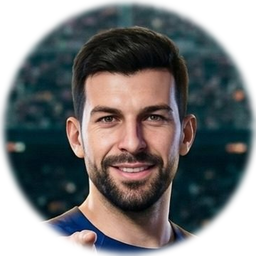
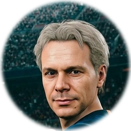
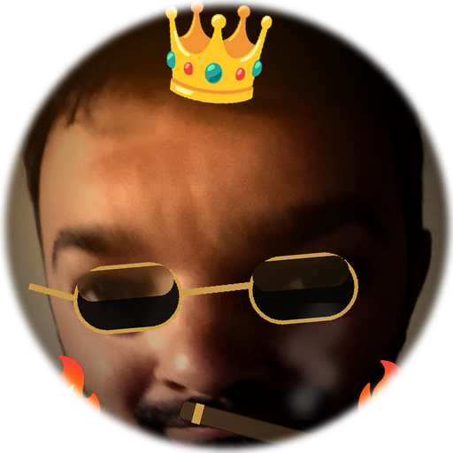

🎬 REPLAY ●
‹ SALA GIOCHI
ESCI ✕
FC BARCELONA
0
PORTIERE
♪
⚙
REC 0
⚡ POTENZA
↺ EFFETTO
🌈 SPECIALE PRONTO
trascina per mirare · rilascia per tirare
RIGORI
AL CAMP NOU
⚽
RIGORISTA
Serie infinita: segna finché non sbagli
🎯
SFIDA 5
5 rigori, sfida gli amici col seed
🧤
PORTIERE
Reagisci d'istinto e para tutto
👑
DUELLO
Para i 5 rigori di Ale e sbloccalo
∞ INFINITA
⚽ TIRI TU
📅 SFIDA DEL GIORNO
🎬 CLASSICO
🎲 SFIDA di un amico — stesso portiere per tutti!
🎮
PES
🎬
ANIME
🧸
PELUCHE
👾
8-BIT
🎃
HALLOW
trascina per mirare ·
piega di lato = EFFETTO
·
⌨ frecce+SPAZIO
🏆 TROFEI
0/10
record
0
★ TOCCA PER GIOCARE ★
FINITA!
hai segnato 0 rigori di fila
record
0
🎮
PES
🎬
ANIME
🧸
PELUCHE
👾
8-BIT
🎃
HALLOW
📲 CONDIVIDI
🎲 SFIDA
★ TOCCA PER RIGIOCARE ★
⇄ CAMBIA TIRATORE
RIGORE 1/5
CAMP NOU
CARICAMENTO ASSET 3D
0%
🎂 COMPLEANNO 🎂
BARCELLONA
I 40 DI ALE · 16–18 OTTOBRE 2026
NUOVO
RECORD!
0 rigori di fila
SALVA ▶
CHI TIRA?

MARIO
#104 · 99 OVR

GIULIO
#7 · 99 OVR

ALE 👑
#1 · RE DEI RIGORI
🔒
vinci il DUELLO
5 RIGORI per
sbloccarlo
TIR · POT · EFF
…CONTRO ALE 🧤👑 IN PORTA
🏆
⚙ IMPOSTAZIONI
🎵 MUSICA
ON
🔊 EFFETTI
ON
🎙 TELECRONACA
ON
🎯 SENSIBILITÀ
MEDIO
📳 SCREEN-SHAKE
ON
🐌 SLOW-MOTION
ON
🎚 VOLUME MUSICA
100%
🎚 VOLUME EFFETTI/FOLLA
100%
🎃 TESTE HALLOWEEN
ZUCCA
PALLONE
CLASSICO
ORO 🔒
FUOCO 🔒
TROFEI
📊 CARRIERA
CHIUDI ✕
★ TOCCA PER CONTINUARE ★
WebGL non disponibile su questo dispositivo.
Apri il gioco su un browser aggiornato.